library(tidyverse)2 Visualizing data using ggplot2
2.1 Goal
Introduce the package ggplot2, which is part of the tidyverse bundle. Learn how to use ggplot2 to produce publication-quality figures. Discuss the philosophical underpinnings of the “Grammar of Graphics”, showcase the ggplot2 syntax, produce examples of the different types of graphs. Learn how to change colors, legends, scales. Visualize histograms, barplots, scatterplots, etc.
2.2 Introduction to the Grammar of Graphics
The most salient feature of scientific graphs should be clarity. Each figure should make crystal-clear a) what is being plotted; b) what are the axes; c) what do colors, shapes, and sizes represent; d) the message the figure wants to convey. Each figure is accompanied by a (sometimes long) caption, where the details can be explained further, but the main message should be clear from glancing at the figure (often, figures are the first thing editors and referees look at).
Many scientific publications contain very poor graphics: labels are missing, scales are unintelligible, there is no explanation of some graphical elements. Moreover, some color graphs are impossible to understand if printed in black and white, or difficult to discern for color-blind people.
Given the effort that you put into your science, you want to ensure that it is well presented and accessible. The investment to master some plotting software will be rewarded by pleasing graphics that convey a clear message.
In this section, we introduce ggplot2, a plotting package for R This package was developed by Hadley Wickham who contributed many important packages to R (all included in the tidyverse bundle we’re going to use for the reminder of the class). Unlike many other plotting systems, ggplot2 is deeply rooted in a “philosophical” vision. The goal is to conceive a grammar for all graphical representation of data. Leland Wilkinson and collaborators proposed The Grammar of Graphics. It follows the idea of a well-formed sentence that is composed of a subject, a predicate, and an object. The Grammar of Graphics likewise aims at describing a well-formed graph by a grammar that captures a very wide range of statistical and scientific graphics. This might be more clear with an example – Take a simple two-dimensional scatterplot. How can we describe it? We have:
Data The data we want to plot.
Mapping What part of the data is associated with a particular visual feature? For example: Which column is associated with the x-axis? Which with the y-axis? Which column corresponds to the shape or the color of the points? In
ggplot2lingo, these are called aesthetic mappings (aes).Geometry Do we want to draw points? Lines? In
ggplot2we speak of geometries (geom).Scale Do we want the sizes and shapes of the points to scale according to some value? Linearly? Logarithmically? Which palette of colors do we want to use?
Coordinate We need to choose a coordinate system (e.g., Cartesian, polar).
Faceting Do we want to produce different panels, partitioning the data according to one (or more) of the variables?
This basic grammar can be extended by adding statistical transformations of the data (e.g., regression, smoothing), multiple layers, adjustment of position (e.g., stack bars instead of plotting them side-by-side), annotations, and so on.
Exactly like in the grammar of a natural language, we can easily change the meaning of a “sentence” by adding or removing parts. Also, it is very easy to completely change the type of geometry if we are moving from say a histogram to a boxplot or a violin plot, as these types of plots are meant to describe one-dimensional distributions. Similarly, we can go from points to lines, changing one “word” in our code. Finally, the look and feel of the graphs is controlled by a theming system, separating the content from the presentation.
2.3 Basic ggplot2
ggplot2 ships with a simplified graphing function, called qplot. In this introduction we are not going to use it, and we concentrate instead on the function ggplot, which gives you complete control over your plotting. First, we need to load the package:
To explore the features of ggplot2, we are going to use a data set detailing the total number of COVID cases and deaths in US counties. The data are provided by the New York Times.
# read the data
# original URL https://github.com/nytimes/covid-19-data/raw/master/live/us-counties.csv
dt <- read_csv("https://rb.gy/zr65gg")Rows: 3257 Columns: 6
── Column specification ────────────────────────────────────────────────────────
Delimiter: ","
chr (3): county, state, fips
dbl (2): cases, deaths
date (1): date
ℹ Use `spec()` to retrieve the full column specification for this data.
ℹ Specify the column types or set `show_col_types = FALSE` to quiet this message.head(dt)# A tibble: 6 × 6
date county state fips cases deaths
<date> <chr> <chr> <chr> <dbl> <dbl>
1 2023-03-24 McPherson South Dakota 46089 534 16
2 2023-03-24 Meade South Dakota 46093 8404 68
3 2023-03-24 Mellette South Dakota 46095 654 8
4 2023-03-24 Miner South Dakota 46097 542 15
5 2023-03-24 Jennings Indiana 18079 8178 119
6 2023-03-24 Johnson Indiana 18081 51093 664we are going to work with date, county, state, cases and deaths.
Let’s select Illnois, and take only the counties with more than 10k cases (to have a less crowded graph):
dti <- dt[(dt$state == "Illinois") & (dt$cases > 10^4), ]A particularity of ggplot2 is that it accepts exclusively data organized in tables (a data.frame or a tibble object—more on tibbles later). Thus, all of your data needs to be converted into a data frame format for plotting.
2.4 Building a well-formed graph
For our first plot, we’re going to produce a barplot detailing how many cases have been reported in each County:
ggplot(data = dti)
As you can see, nothing is drawn: we need to specify what we would like to associate to the x axis, and what to the y axis, etc. (i.e., we want to set as the aesthetic mappings). A barplot typically has classes on the x axis, while the y axis reports the counts in each class.
ggplot(data = dti) + aes(x = county, y = cases)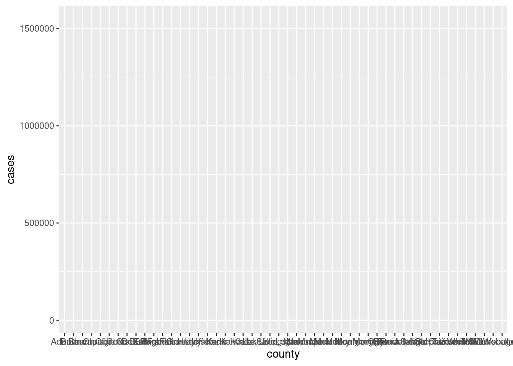
Note that we concatenate pieces of our “sentence” using the + sign! We’ve got the aestethic mappings figured out, but still no graph… we need to specify a geometry, i.e., the type of graph we want to produce. In this case, a barplot where the height of the bars is specified by the y value:
ggplot(data = dti) + aes(x = county, y = cases) + geom_col()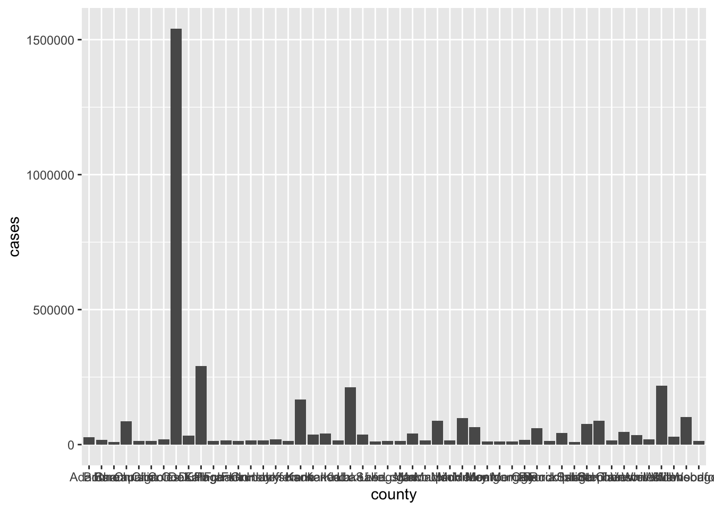
Because it is very difficult to see the labels, let’s swap the axes:
ggplot(data = dti) +
aes(x = county, y = cases) +
geom_col() +
coord_flip()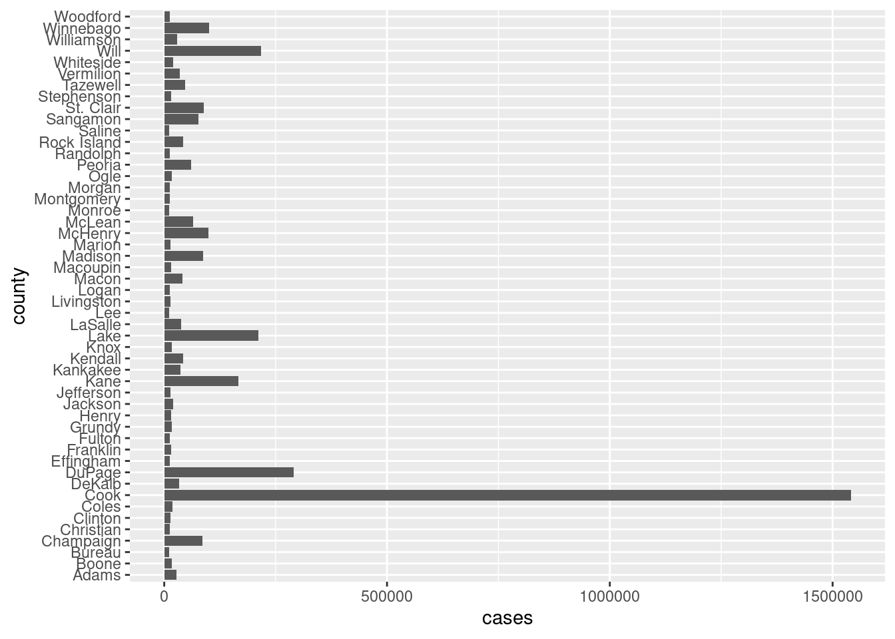
The graph shows that, naturally, the vast majority of cases was reported in Cook county. We have written a “well-formed sentence”, composed of data + mapping + geometry, and this is sufficient to produce a graph. We can add “adjectives” and “adverbs” to our graph, to make it clearer:
ggplot(data = dti) +
aes(x = reorder(county, cases), y = cases) + # order labels according to cases
geom_col() +
ylab("Number of COVID cases reported") + # x label
xlab("Illinois County") + # y label
scale_y_log10() + # transform the counts to logs
coord_flip()+
ggtitle(dti$date[1]) # main title (use current date)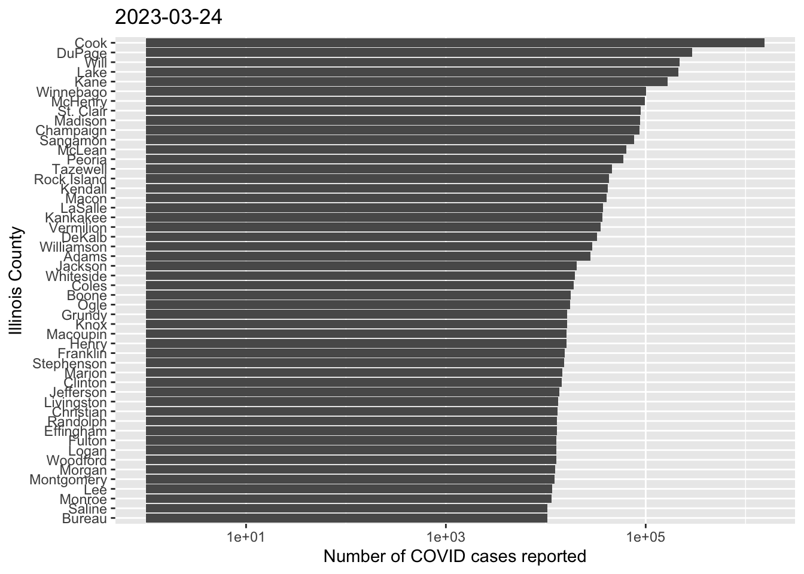
2.5 Scatterplots
Using ggplot2, one can produce very many types of graphs. The package works very well for 2D graphs (or 3D rendered in two dimensions), while it lack capabilities to draw proper 3D graphs, or networks.
The main feature of ggplot2 is that you can tinker with your graph fairly easily, and with a common grammar. You don’t have to settle on a certain presentation of the data until you’re ready, and it is very easy to switch from one type of graph to another.
For example, let’s plot the number of cases vs. number of deaths:
# you can store the graph in a variable
pl <- ggplot(data = dti)
pl <- pl + aes(x = cases, y = deaths) # for a scatter plot, we need two aes mappings!
pl <- pl + geom_point() # draw points in a scatterplot
pl <- pl + scale_x_sqrt() + scale_y_sqrt() # transform axes
pl # or show(pl)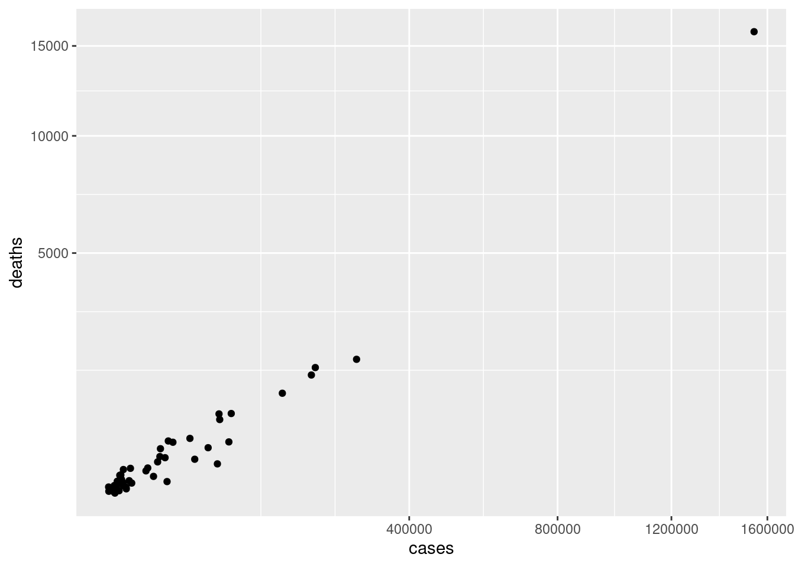
Showing that number of daily cases and number of daily deaths are highly correlated (but it would be a stronger correlation if we were to plot past cases vs. current deaths).
2.6 Histograms, density and boxplots
It would be nice to see the distribution of the ratio deaths/cases. To do so, we can produce a histogram:
pl <- ggplot(data = dti)
pl <- pl + aes(x = deaths / cases)
pl + geom_histogram(binwidth = 0.0025) 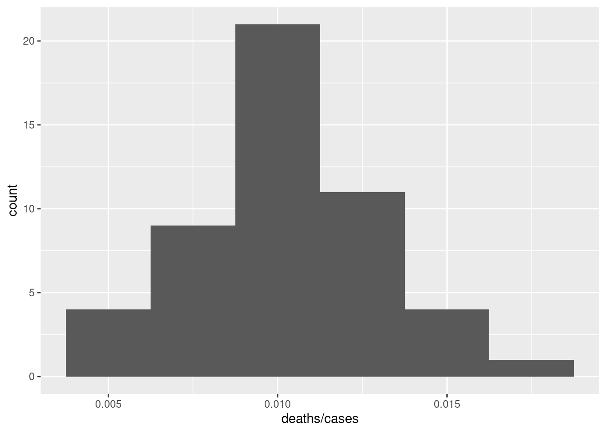
We can control the width of the bins by specifying:
pl + geom_histogram(bins = 30) # specify the number of bins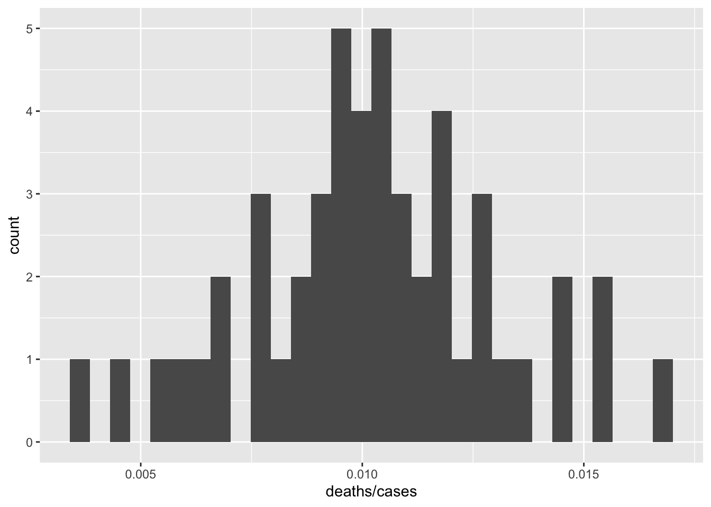
pl + geom_histogram(binwidth = 0.001) # specify the bin width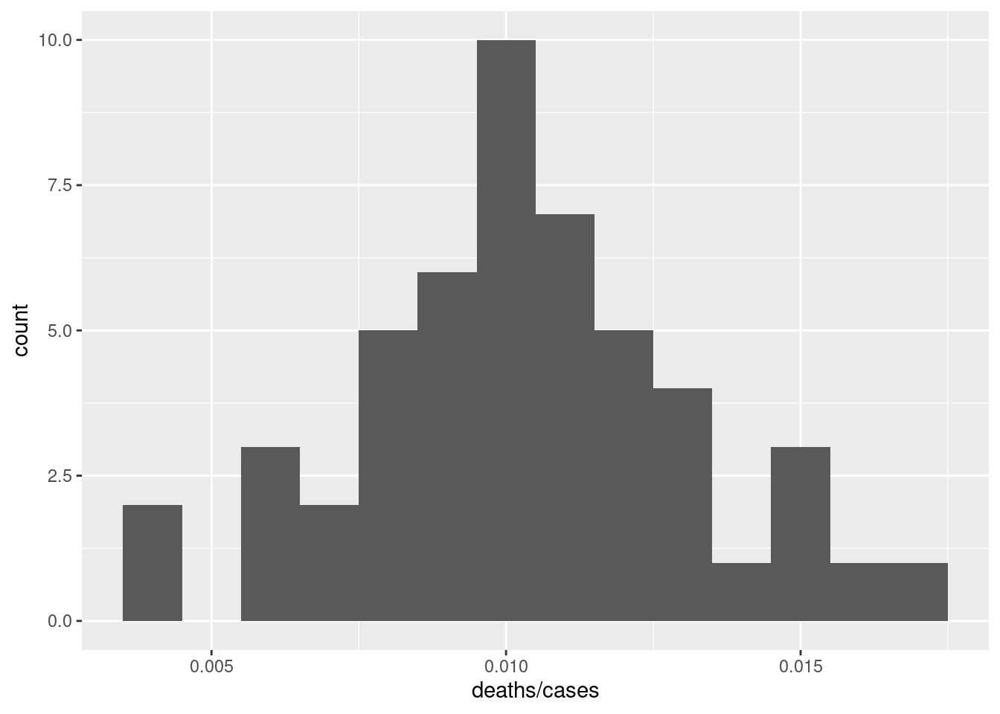
Let’s see whether the histograms differ between Illinois and Indiana:
ggplot(data = dt[dt$state %in% c("Illinois", "Indiana"),]) +
aes(x = deaths / cases, fill = state) + # fill the bar colors by state
geom_histogram(bins = 30)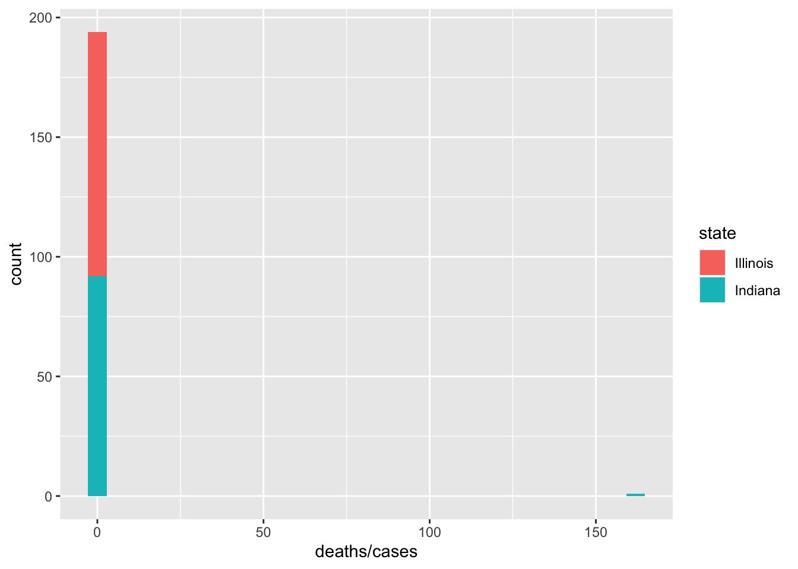
To plot the histogram side by side, use
ggplot(data = dt[dt$state %in% c("Illinois", "Indiana"),]) +
aes(x = deaths / cases, fill = state) + # fill the bar colors by state
geom_histogram(position = "dodge", bins = 30)+
xlim(c(0,0.03))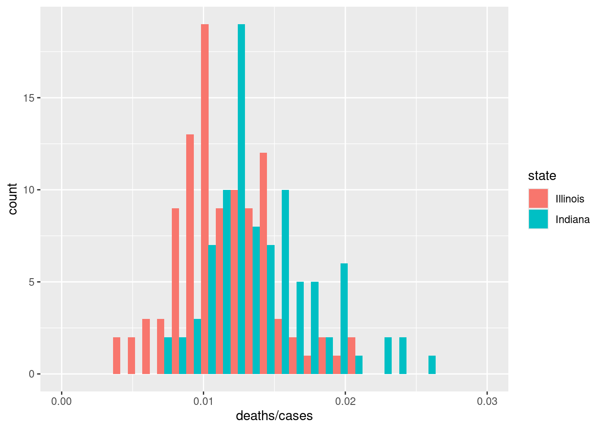
Similarly, we can approximate the histogram using a density plot, which interpolates the bin height to create a smooth distribution:
ggplot(data = dt[dt$state %in% c("Illinois", "Indiana"),]) +
aes(x = deaths / cases, fill = state) + # fill by state
geom_density() + xlim(c(0,0.03))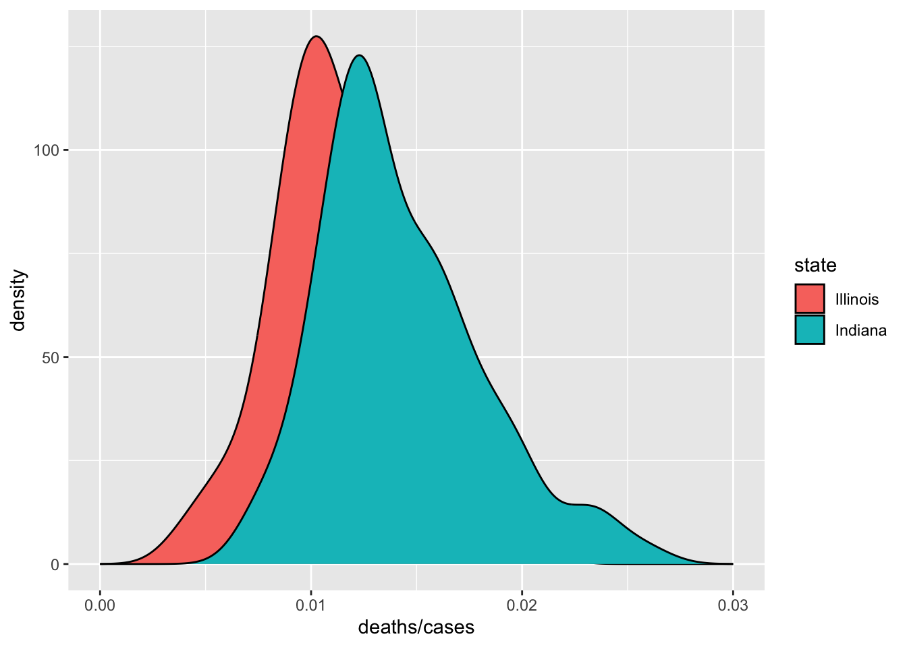
To see the graph better, let’s make the coloring semi-transparent:
ggplot(data = dt[dt$state %in% c("Illinois", "Indiana"),]) +
aes(x = deaths / cases, fill = state) + # fill by state
geom_density(alpha = 0.5) + xlim(c(0, 0.03))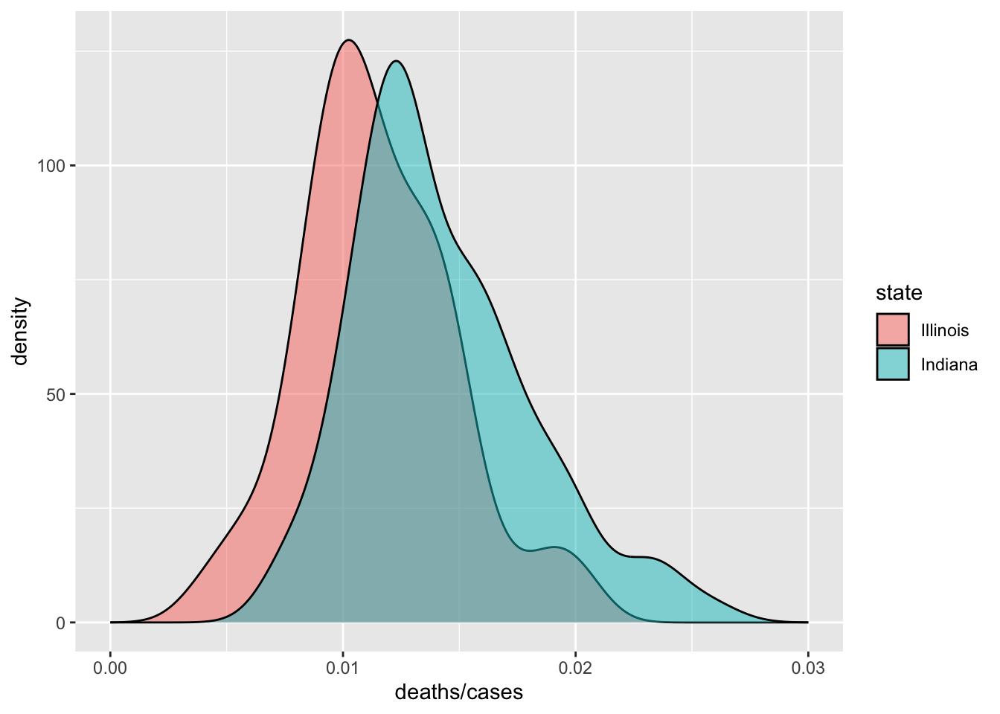
Showing a similar distribution for the death rate in the two states. For this type of comparison, the ideal graph to show is maybe a box-plot or a violin plot:
ggplot(data = dt[dt$state %in% c("Illinois", "Indiana"),]) +
aes(x = state, y = deaths / cases, fill = state) + # we need both x and y
geom_boxplot() + ylim(c(0, 0.03))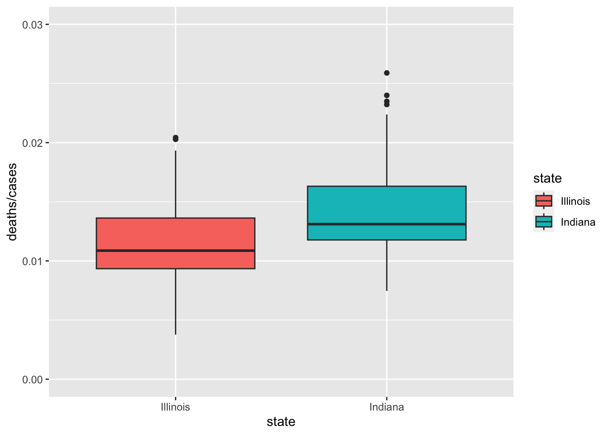
A boxplot shows the median (horizontal bar) as well as the inter-quartile range (box size goes from 25th to 75th percentile), as well as the typical range of the data (whiskers). The dots represent “outliers”. To show the full distribution, you can use a violin plot:
ggplot(data = dt[dt$state %in% c("Illinois", "Indiana"),]) +
aes(x = state, y = deaths / cases, fill = state) + # we need both x and y
geom_violin(draw_quantiles = 0.5) + ylim(c(0, 0.03))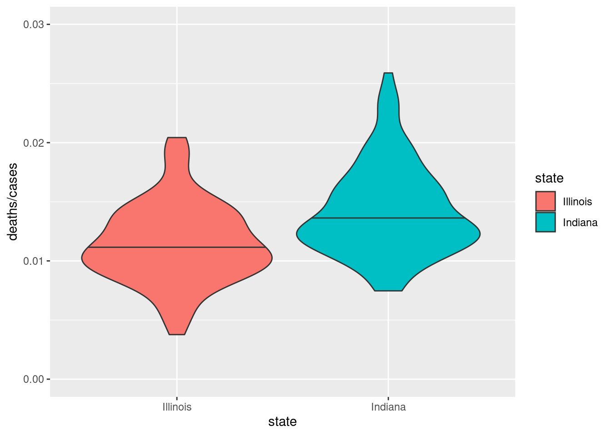
Note that when we’re producing “similar” plots (e.g., histogram vs. density, box vs. violin, or any other plot sharing the same aesthetic mappings) changing a single word, we have changed the structure of the graph considerably!
2.7 Scales
We can use scales to determine how the aesthetic mappings are displayed. For example, we could set the x axis to be in logarithmic scale, or we can choose how the colors, shapes and sizes are used. ggplot2 uses two types of scales: continuous scales are used for continuos variables (e.g., real numbers); discrete scales for variables that can only take a certain number of values (e.g., colors, shapes, sizes).
For example, let’s plot deaths vs. cases in our dti data set:
pl <- ggplot(data = dti) +
aes(x = cases, y = deaths, colour = log(deaths)) +
geom_point()
pl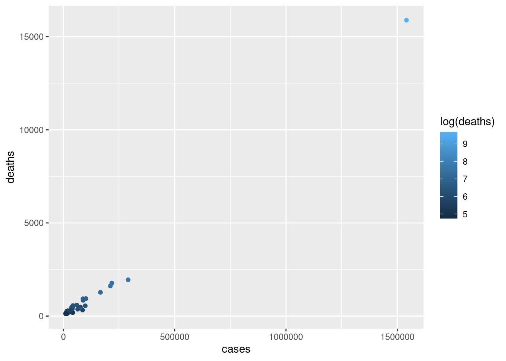
We can change the scale of the x axis by calling:
pl + scale_x_log10() + scale_y_log10() # log-log plot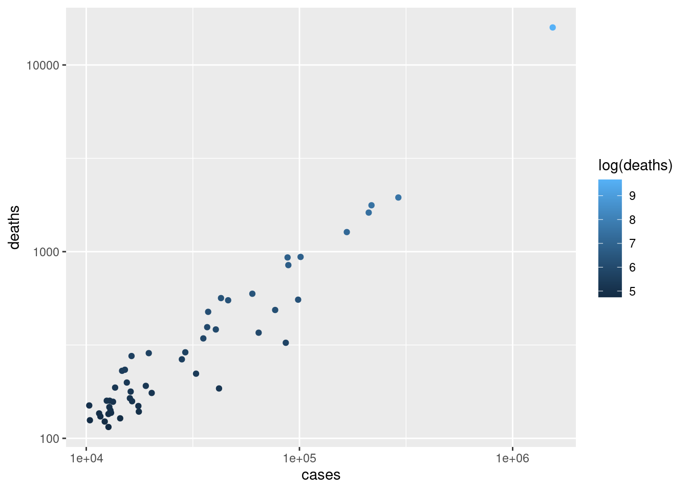
pl + scale_x_sqrt() # sqrt of number of cases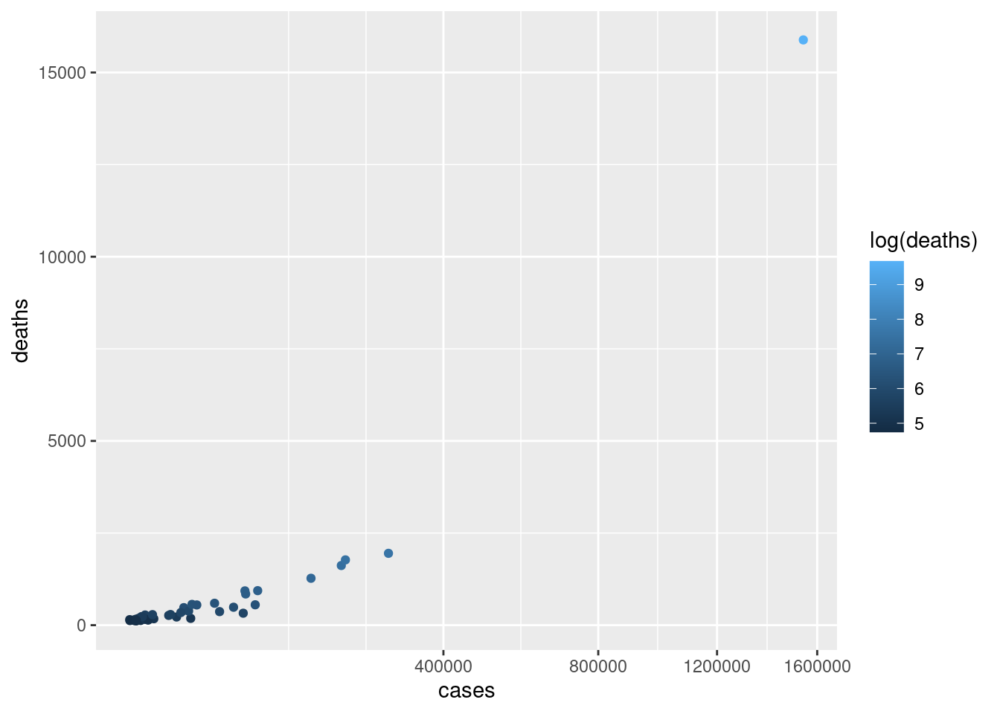
pl + scale_x_reverse() # from large to small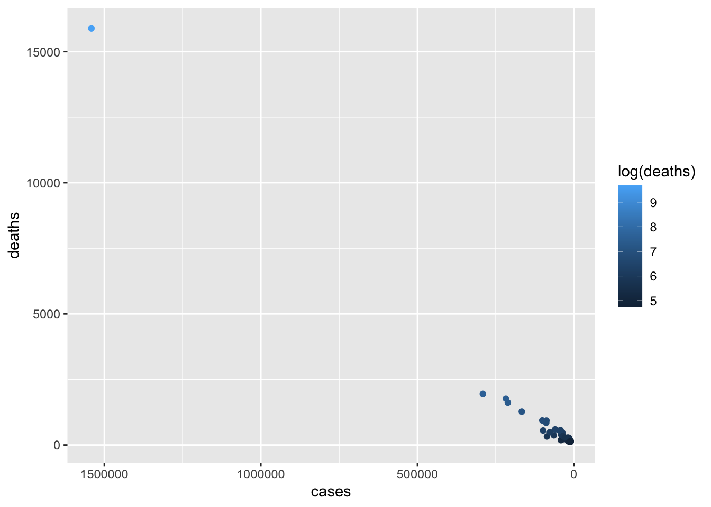
Similarly, we can change the use of colors, points, etc.
2.8 List of aesthetic mappings
We’ve seen some of the aesthetic mappings. Here’s a list of the main aes:
xwhat to use for x axisywhat to use for y axiscolorthe color of points and linesfillthe color of shapes (e.g., boxes, bars, etc.)sizethe size of points, lines, etc.shapethe shape of pointsalphathe level of transparency of the objectlinetypethe type of line (e.g., solid, dashed, etc.)
# a more complex example
ggplot(data = dt) +
aes(x = cases, y = deaths,
color = state) +
geom_point() +
scale_x_log10() + # note that the points with 0 cases or deaths will not work
scale_y_log10() +
theme(legend.position = "bottom")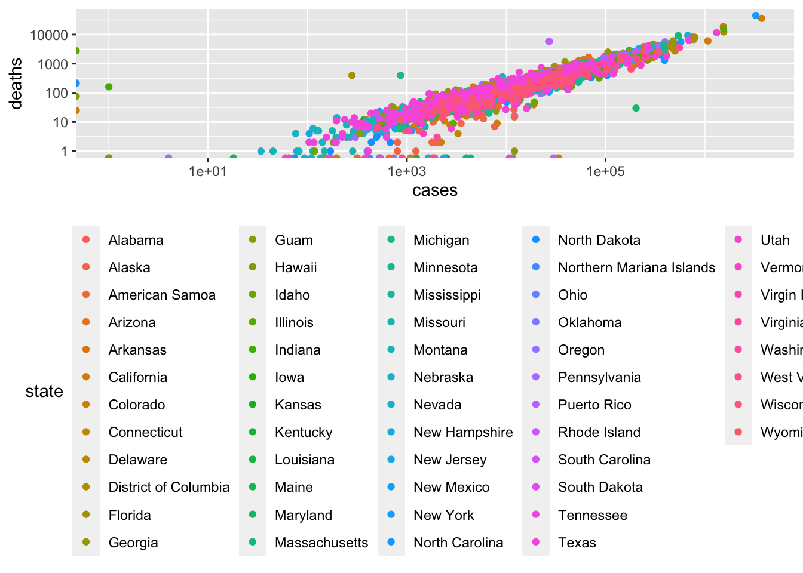
2.9 List of geometries
There are very many geometries; here are a few of the most useful ones:
- Lines:
geom_abline(line given slope and intercept);geom_hline,geom_vline(horizontal, vertical line);geom_line(connect observation in scatterplot). - Bars:
geom_bar(bar height is the count/sum);geom_col(bar heigts are provided by the data). - Boxes:
geom_boxplot. - Distributions:
geom_violin(like boxplots, but showing the density of the distribution);geom_density(density of 1D distribution),geom_density2d(density of bivariate distribution);geom_histogram,geom_bin2d(histograms). - Text:
geom_text. - Smoothing function:
geom_smooth(interpolates the points of a scatterplot). - Error bars:
geom_errorbar. - Maps:
geom_map(polygons from a reference map).
2.10 List of scales
There are also very many scales. Here are a few:
xlab,ylab,xlim,ylimcontrol labels and ranges of the axes.scale_alphatransparency of the points/shapes.scale_color(many options) colors of points and lines.scale_fill(many options) colors of boxes, bars and shapes.scale_shapeshape of the points.scale_linetypetype of lines.scale_sizesize of points and lines.scale_x,scale_y(many options) transformations of the axes.
2.11 Themes
Themes allow you to manipulate the look and feel of a graph with just one command. The package ggthemes extends the themes collection of ggplot2 considerably. For example:
# to install, type install.packages("ggthemes") in the console
library(ggthemes)
pl <- ggplot(data = dti) + aes(x = cases, y = deaths) +
geom_point() + scale_x_log10() + scale_y_log10()
pl + theme_bw() # white background
pl + theme_economist() # like in the magazine "The Economist"
pl + theme_wsj() # like "The Wall Street Journal"2.12 Faceting
In many cases, we would like to produce a multi-panel graph, in which each panel shows the data for a certain combination of parameters. In ggplot2 this is called faceting: the command facet_grid is used when you want to produce a grid of panels, in which all the panels in the same row (or column) have axes-ranges in common; facet_wrap is used when the different panels do not necessarily have axes-ranges in common.
For example:
pl <- ggplot(data = dt[dt$state %in% c("Illinois", "Missouri", "Wisconsin", "Indiana"), ]) +
aes(x = cases, y = deaths, colour = state) + geom_point() + scale_x_log10() + scale_y_log10()
pl <- pl + facet_wrap(~state)
pl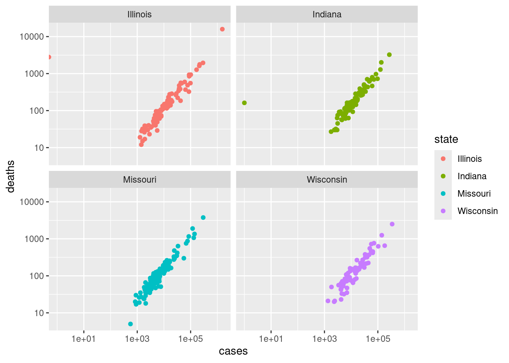
Let’s add a line separating showing the best-fit line:
pl <- pl + geom_smooth()
pl`geom_smooth()` using method = 'loess' and formula = 'y ~ x'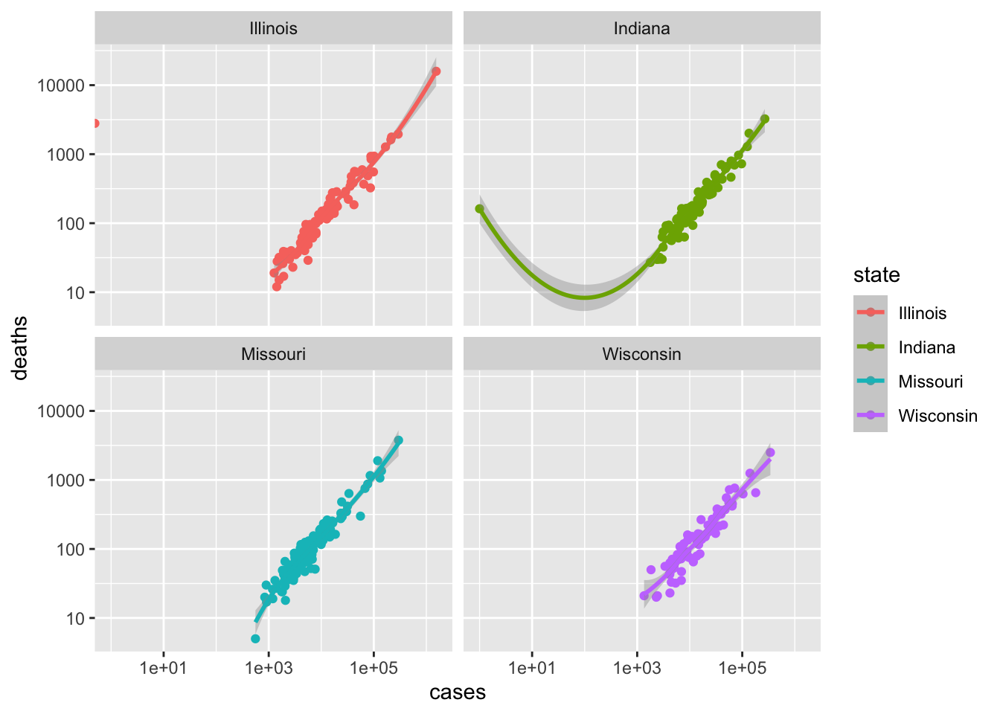
Make ranges on x and y axes equal, and add the 1:1 line:
pl <- pl + coord_equal() + geom_abline(slope = 1, intercept = 0)
pl`geom_smooth()` using method = 'loess' and formula = 'y ~ x'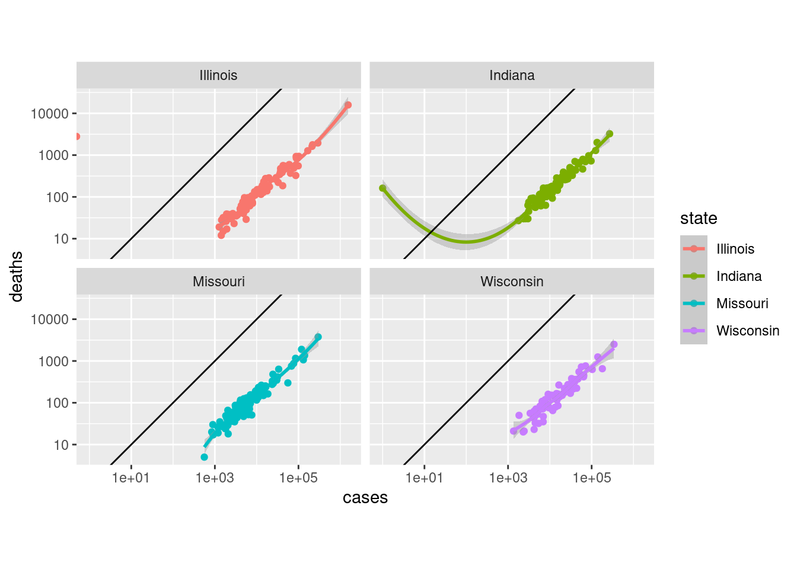
2.13 Setting features
Often, you want to simply set a feature (e.g., the color of the points, or their shape), rather than using it to display information (i.e., mapping some aestethic). In such cases, simply declare the feature outside the aes:
pl <- ggplot(data = dt) +
aes(x = cases, y = deaths) +
scale_x_log10() +
scale_y_log10()
pl + geom_point()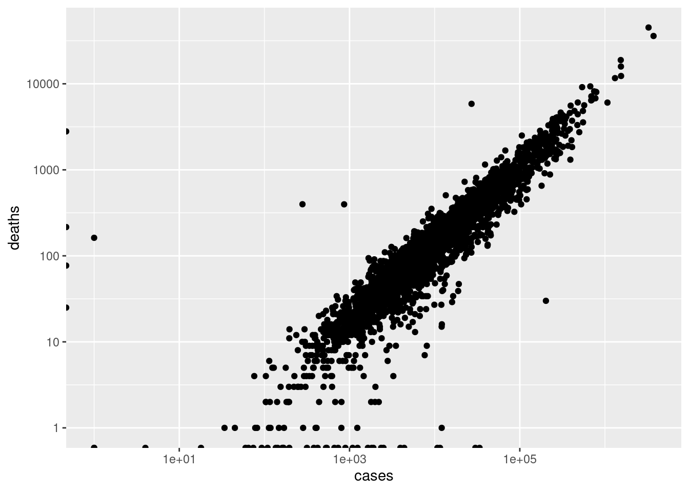
pl + geom_point(colour = "red")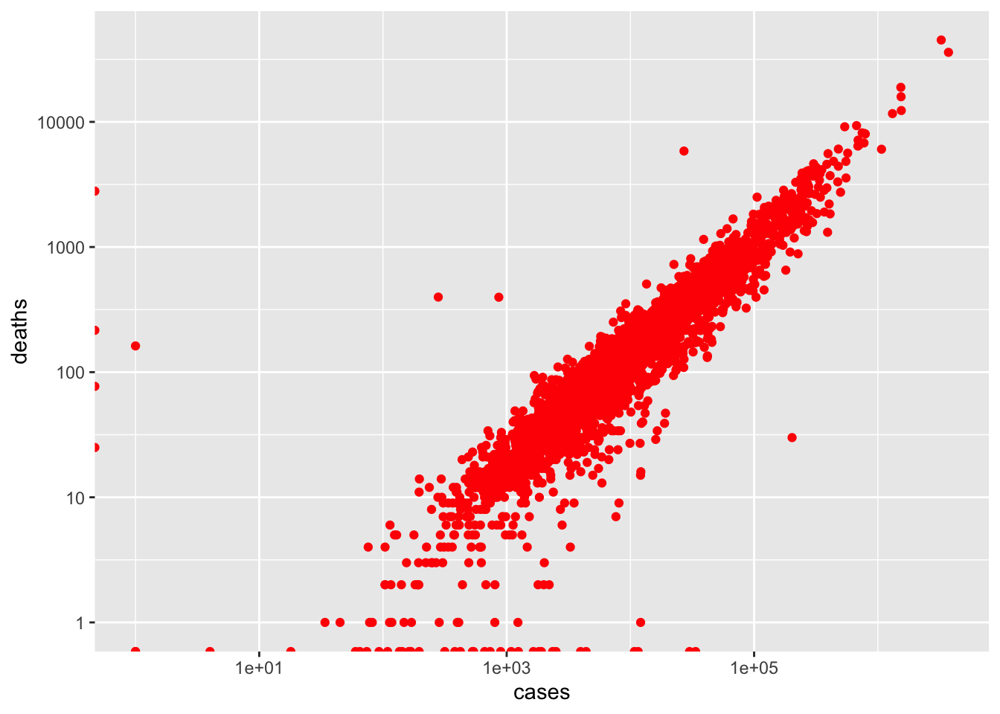
pl + geom_point(shape = 3)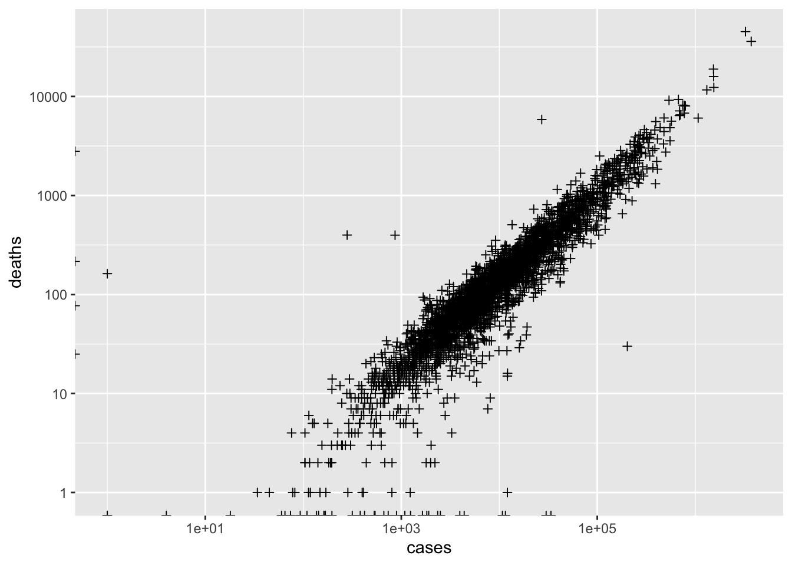
pl + geom_point(alpha = 0.5)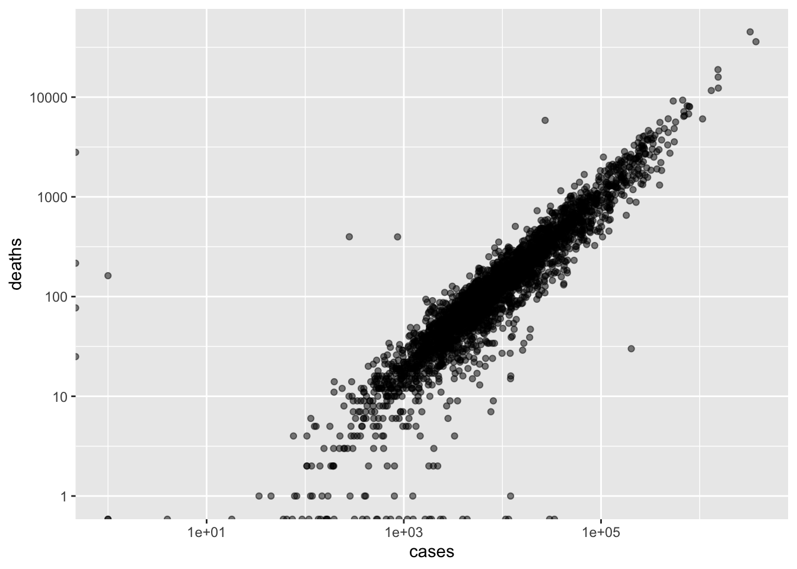
2.14 Saving graphs
You can either save graphs as done normally in R:
# save to pdf format
pdf("my_output.pdf", width = 6, height = 4)
print(my_plot)
dev.off()
# save to svg format
svg("my_output.svg", width = 6, height = 4)
print(my_plot)
dev.off()or use the function ggsave
# save current graph
ggsave("my_output.pdf")
# save a graph stored in ggplot object
ggsave(plot = my_plot, filename = "my_output.svg")2.15 Multiple layers
You can overlay different plots. To do so, however, they must share some of the aesthetic mappings. The simplest case is that in which you have only one dataset:
ggplot(data = dt) +
geom_point(aes(y = state, x = cases), color = "black") +
geom_point(aes(y = state, x = deaths), color = "red") +
scale_x_log10() +
xlab("cases (black), deaths (red)")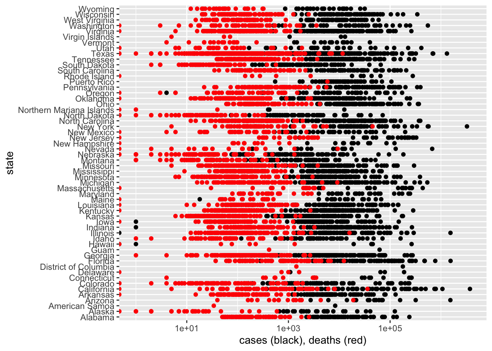
2.16 Try on your own data!
Now that you’re familiar with ggplot2, try producing some meaningful plots for your own data.